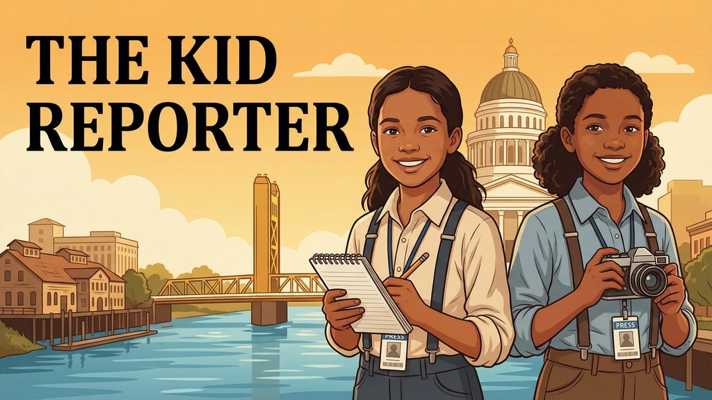

Pocket Girls Softball:
Demon-Slay Diamond
Stage lights on. Bats up. Cleats glowing. The Mote(n) sisters bring K-pop neon energy to the Pocket diamond — Blue Crushers and Glove Bugs, season one, and we are not playing nice.
Hi, my name is Sarai. I am 8. I play for the Blue Crushers, number 4, and my little sister Alani is 5 and she plays for the Glove Bugs. This is our first season of Pocket Girls Softball, and I am telling you right now — we showed up like a K-pop group walking on stage. Lights on. Crowd loud. Vibes immaculate.
Pocket Girls Softball is the league in the Pocket part of Sacramento. The website breaks down the whole structure: T-Ball, 8U, 10U, 12U, 14U, and 16U. Alani is in the little division with the Glove Bugs (the cutest bug-and-bat logo you ever saw). I am in 8U with the Blue Crushers. Coach Mariko runs our team, and our assistant coaches are Nick, Andy, and Aron. My teammates are Aricela #25, Briella #10, Calliope #88, Camila #30, Dylan #8, Emery #24, Emma #12, Finley #99, Lucia #2, Meilani #7, Mya #90, and Olivia #22. Blue jersey, blue socks, blue everything.
Track 1: Batting (a.k.a. The Drop)
When I walk into the batter’s box, I feel like the beat just dropped. Helmet on, bat up, cleats locked — I am not scared of the pitch, I am waiting for it. Alani is the same. She is 5 and she steps to the plate in pink cleats like the whole field is her stage. We both live for that crack. That is the sound of our song starting.

Track 2: Defense (Demon-Slay Mode)
In the field we go full demon-slay. Grounders coming hot? I scoop and fire to first. Pop fly? Glove up, eyes locked, catch. Alani chases everything that moves like the ball stole something from her. Coaches say we have good hands. We believe them. Glove down, ready position, breathe, attack.
Track 3: Speed (Light Mode)
And we are fast. Like, neon-blur fast. When I get on base I am already looking at the next one. When Alani runs, the whole crowd goes off because her little legs go ZOOM. Speed is our superpower. Coach says good base runners change the whole game, and we plan to change a lot of games.
“The dugout cheers, the sunflower seeds, the bubble gum — that is what makes Pocket Girls Softball special.”
The Pocket Softball Universe
The best part is not just the games. It is the WHOLE softball world in the Pocket. Dugout cheers. Sunflower seeds. Bubble gum. Team banners with our names and numbers in glow letters. Families in camping chairs yelling “GO! GO! GO!” Little sisters watching big sisters. Big sisters teaching little ones. Pocket Girls Softball is not just a league — it is a community concert that happens every weekend.
Encore: Next Season We Are Veterans
This was our first season, but do not get it twisted. We hit. We fielded. We ran. We brought the noise every single game. Next year, Alani and I are back as veterans — we will know the fields, the cheers, the chants, and the snack bar by heart. And we will still be fast.
Watch out, Pocket. The Moten sisters are just getting started.
Sarai Moten is a staff reporter at The Kid Reporter based in Sacramento, CA. To learn more about the league, visit the Pocket Girls Softball website. To read more of her work, visit the newsroom →